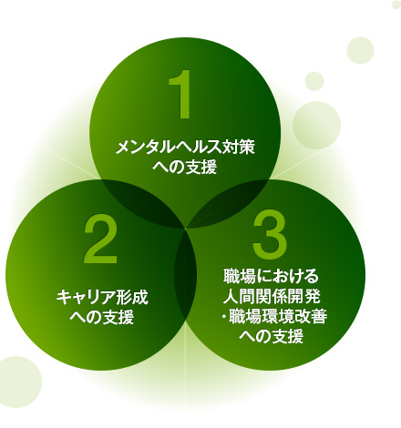

THREE FIELDS3つの活動領域
「相談」で働く人を支え、「養成」で支える人を育て、「研究」でその質を高める。3つの領域は互いに結びつき、協会の活動の循環をつくっています。

COUNSELING相談 ─ カウンセリング・組織支援働く人のための個別カウンセリングと、企業・団体のメンタルヘルス対策支援。電話・対面・SNSなど多様な窓口を運営しています。
TRAINING養成 ─ 資格・講座産業カウンセラー・シニア産業カウンセラーの養成と、厚生労働大臣認定のキャリアコンサルタント養成講習を実施しています。厚生労働大臣認定講習
RESEARCH研究 ─ 調査・研究・発信産業カウンセリングに関する調査研究、学術誌・刊行物の発行、全国研究大会の開催を通じて、実践の質を高めています。
全国13支部でも、地域の企業・行政と連携した相談会や研修など、3領域にわたる活動を展開しています。支部の一覧は組織図・支部所在地をご覧ください。
DISASTER RELIEF災害支援活動
大規模な災害の発生時には、被災された方々や支援にあたる方々の心のケアが長期にわたって必要になります。協会は、行政・関係機関からの要請に応じ、支部と連携して電話相談や現地での傾聴ボランティアなどの支援活動を行ってきました。
災害支援は一度きりの活動ではなく、復興の歩みに寄り添う継続的な取り組みです。産業カウンセラーの傾聴の専門性を、平時の職場だけでなく、非常時の地域社会にも役立てていきます。
具体的な支援活動の記録は、実装時に現サイトのボランティア・災害関連ページ（現行3ページ分）を統合・移行して掲載します。最新の活動報告は活動報告から自動で一覧表示される設計です。
ANTI-HARASSMENTハラスメント防止への取り組み
職場のハラスメントは、働く人の心身の健康と組織の活力を損なう重大な課題です。協会は、ハラスメント防止研修の実施、相談窓口の運営、外部相談窓口の受託などを通じて、防止と早期対応の両面から企業・団体を支援しています。
CONSULTATIONJAICOハラスメント相談室 ↗企業・団体向けの外部ハラスメント相談窓口サービス。専用サイトでご案内しています。
TRAININGハラスメント防止研修管理職・一般職向けの研修プログラム。企業・団体向けサービスのページでご案内しています。
役職員を守るための協会自身の方針は、カスタマーハラスメント対応基本方針をご覧ください。